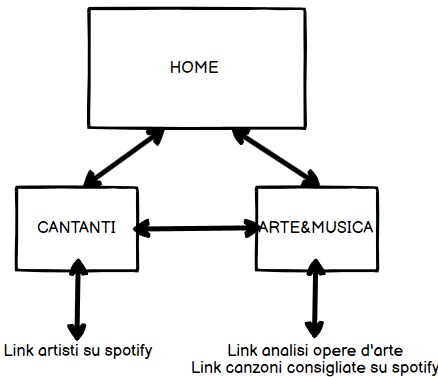
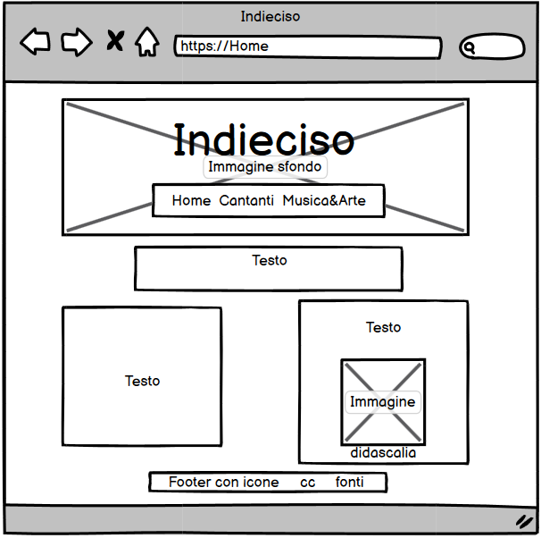
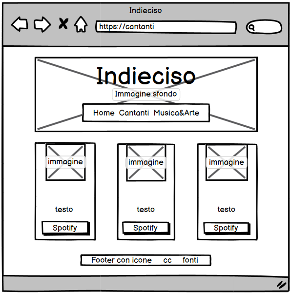
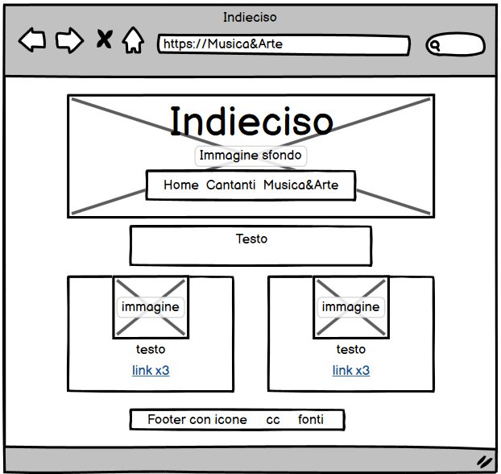
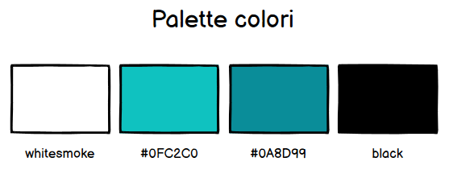
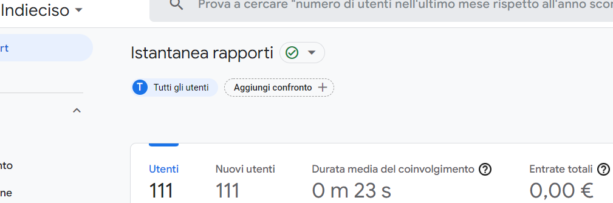
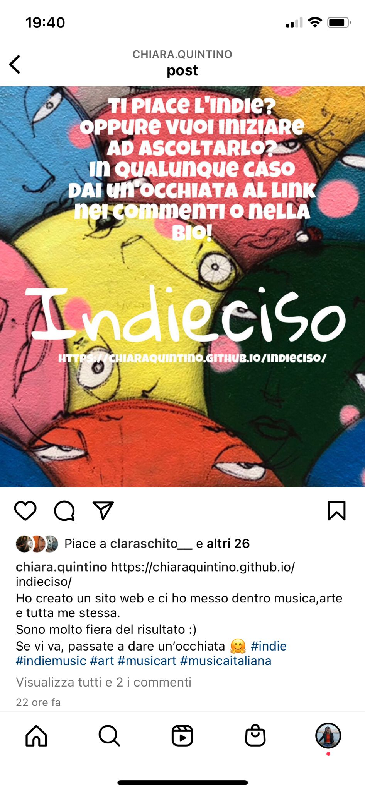

Il sito web è stato creato per offrire la possibilità di conoscere un nuovo genere musicale (o di approfondirlo per chi già lo ascolta) in modo coinvolgente e diverso dal solito blog di musica. Come? Tramite un'ampia scelta di artisti, canzoni consigliate o lasciandosi ispirare dalle opere d'arte. Se si è particolarmente interessati si può accrescere la conoscenza degli artisti tramite la loro biografia; o, cliccando sui quadri è possibile scoprire qualcosa in più sull'opera scelta.
Il target utente è rappresentato principalmente da adolescenti o giovani(20-30 anni) forse più vicini a questo genere musicale rispetto ad una fascia di età superiore.
1.Benchmarking
Obiettivi: Il sito ha lo scopo di far conoscere un nuovo genere musicale (indie) o di far scoprire qualcosa di nuovo al riguardo in maniera differente e cercando di unire arte e musica.
Target Utente: Il target primario sono gli adolescenti o i giovani(20-30 anni).
Competitors:
Indielife.it: un magazine/blog dedicato alla musica indie e hiphop e ai suoi artisti emergenti. Il sito presenta un ampia scelta di contenuto per ogni artista con brani suggeriti.La disposizione però risulta confusionaria perchè a primo impatto non si hanno troppe informazioni riguardo le foto presenti.La navigazione sul sito non è fluida per la scelta del tipo di barra di navigazione e della disposizione degli elementi.
Spotify: piattaforma per ascoltare musica che offre una scelta di playlist di vario tipo.E' molto semplice da usare, scelta ampissima per qualsiasi genere. Pecca per le poche informazioni di base che si hanno sugli artisti. Le playlist già create sono ripetitive e i brani suggeriti non troppo mirati rispetto alla musica ascoltata dall'utente specifico.
2.Struttura e Layout
Architettura del sito:

Wireframe:
  
Look and feel:
Font utilizzati: Quicksand, Gloria Hallelujah, Libre Baskeruille, Poppins.

3.Linguaggi e Strumenti
Linguaggi web utilizzati: HTML per la struttura e css per la grafica.
A supporto della progettazione ho utilizzato bootstrap e W3schools per alcuni elementi della grafica, fontawesome e addtoany.com per le icone, google font per le font, flicr per le immagini e google analitics per monitorare il raggiungimento degli abiettivi del sito.
1.Background
Il progetto offre informazioni generali di base sul genere indie e su alcuni degli artisti più caratteristici.Il risultato che si ottiene tramite l'uso delle immagini e di non troppo testo rende il sito facilmente accessibile. Si riesce ad avere subito una panoramica degli argomenti trattati e se si è interessati si ha la possibilità di approfondire la conoscenza.
Per rendere il sito più efficace e interessante si può aggiungere più scelta musicale, la pagina "musica&arte" può essere implementata con più materiale e migliorata a livello tecnico e visivo per renderla più semplice da usare.
2.Obiettivi comunicativi
Gli obiettivi concreti prefissati sono: il raggiungimento di almeno 50 visite al sito, la visualizzazione della storia instagram per far conoscere il sito da almeno 100 persone, minimo 20 like al post instagram che pubblicizza il sito. Il progetto è volto ad approfondire o conoscere un nuovo genere musicale, gli artisti più rappresentativi e le canzoni da non perdere.
3.Target audience e messaggio
Il target principale sono gli under 30 e gli appassionati di musica indie e non. Questi gruppi sono raggiungibili tramite i social ma possiamo implementare il loro numero tramite piccoli gadget8ad esempio sticker) e pubblicità sui social.La barriera per diffondere il messaggio è principalmente la molta concorrenza e la poca attenzione che si presta quando si usano i social.
Il sito vuole far scoprire un nuovo genere musicale e i suoi artisti, dare la possibilità di approfondire la conoscenza di cantanti e cercare di associare arte e musica.Vorrei che il target utente riuscisse ad approfondire la conoscenza in modo semplice, intuitivo e divertente lasciandosi affascinare anche dall'arte. Successivamente il target dovrebbe condividere quanto scoperto ed aiutare nell'ulteriore approfondimento dell'argomento che appassiona molte persone.
4.Promozione
Promuoverò il sito web online tramite stories instagram, post instagram e condivisione del link tramite whatsapp.
5.Valutazione dei risultati
Il messaggio e il target utente sono stati raggiunti e il progetto è arrivato anche ad una fascia di età superiore ai 30 anni grazie alla pubblicizzazione del sito tramite il link su whatsapp.
La realizzazione degli obiettivi è ben visibile perchè il sito è stato visitato da 111 utenti, la storia instagram ha ottenuto 125 visualizzazioni ed è stata ricondivisa da 2 due persone e il post instagram ha raggiunto 27 like e 2 commenti ed è stato ricondiviso da 3 persone.

